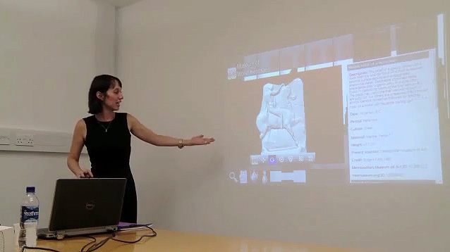

LONDON, U.K.
July 13, 2013.
The DEA Virtual Museum of World Heritage1 opened its electronic gates yesterday, July 12, 2013, during our lecture at the Digital Classicist Seminar in London, United Kingdom. This electronic museum is part of the Digital Epigraphy and Archaeology project at the University of Florida.

The Virtual Museum offers a web interface for browsing the 3D digitized inscriptions and archaeological artifacts from the Digital Epigraphy and Archaeology database. The database was developed as part of the Digital Epigraphy Toolbox2, a software funded by the National Endowment for the Humanities for digitizing and disseminating inscriptions in their tri-dimensional form.
The goal of the Virtual Museum interface is to facilitate the digital preservation and dissemination of important historical tri-dimensional artifacts in a form easily accessible from the web-browser of a personal computer, or other electronic devices, such as tablets and smart phones. Furthermore, the 3D exhibits can be easily embedded into other web-sites, databases, or digital platforms, such as interactive digital books.
The DEA Virtual Museum can be accessed at the following address: www.digitalepigraphy.org/museum.
The DEA editorial team
References:
1. DEA Virtual Museum of World Heritage, www.digitalepigraphy.org/museum.
2. Digital Epigraphy Toolbox, www.digitalepigraphy.org/toolbox.
Funded in part by the NEH grant HD-51214-11.